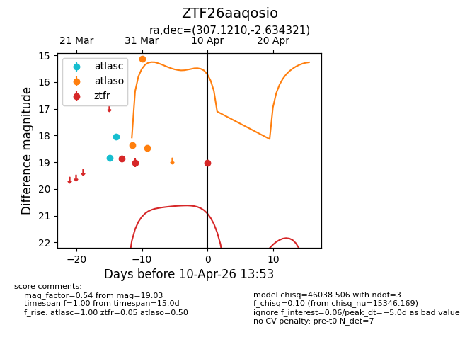
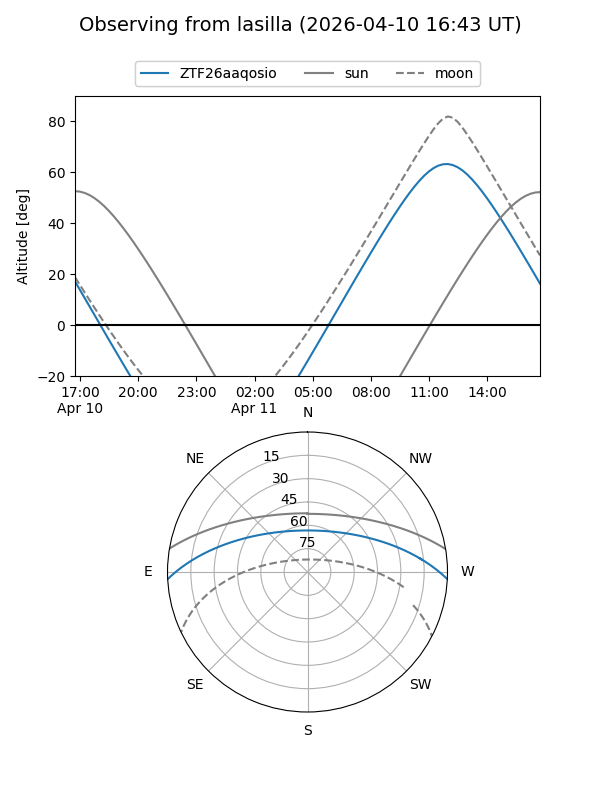
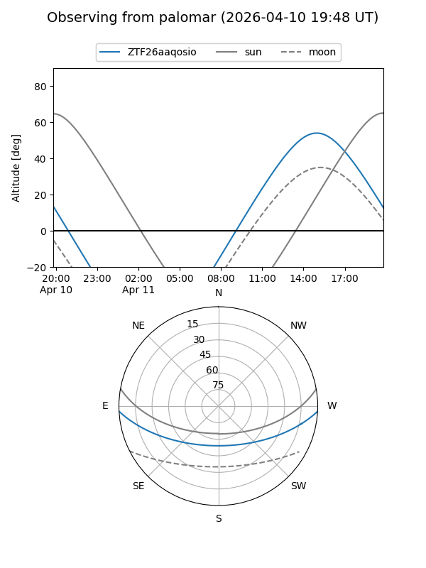
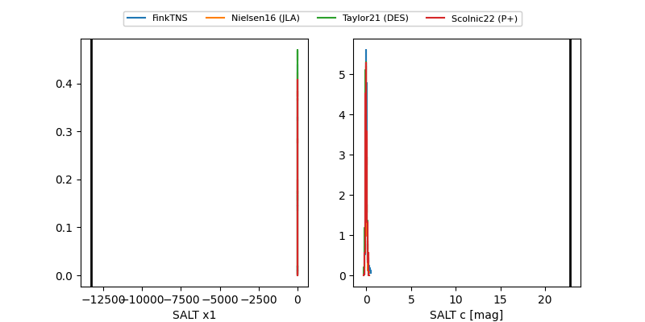

ZTF26aaqosio
Target ZTF26aaqosio at 2026-04-10 14:01
Aliases and brokers:
FINK: link
Lasair: link
ALeRCE: link
alt names
ZTF26aaqosio (ztf,fink_ztf)
Coordinates:
equatorial (ra, dec) = 307.1210,-2.63432
equatorial (HMS+DMS) = 20:28:29.04,-02:38:03.55
galactic (l, b) = (42.0558,-22.72256)
Flags:
Photometry:
last atlasc=18.05, atlaso=18.47, ztfr=19.03
2 atlasc, 3 atlaso, 3 ztfr detections
Lightcurve

Visibility


Additional plots
